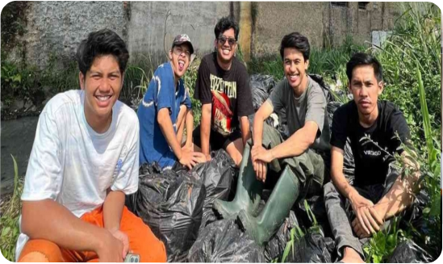

Aksi Anak Muda Peduli Lingkungan, Pandawara Grup
Saat ini sedang marak trend bersih-bersih lingkungan yang dilakukan oleh para anak muda, Pandawara Grup salah satu contohnya. Nama Pandawara Grup sering kali menjadi perbincangan dan trend topik di sosial media berkat aksi-aksinya dalam membersihkan sampah. Pandawara Grup sering membagikan kegiatannya di channel Youtube Pandawara Group dan sosial media TikTok serta Instagram. Pandawara Grup beranggotakan lima orang pemuda, yaitu Ikhsan Destian, Gilang Rahma, Muhammad Rifqi, Rafly Pasya, dan Agung Permana, tak jarang Pandawara Grup mengajak masyarakat dan netizen untuk turut serta turun ke lapangan membersihkan sampah.
Kiprah kelima pemuda asal Bandung yang tergabung dalam Pandawara Grup tersebut dimulai sejak tahun 2022 lalu. Mereka awalnya sudah saling mengenal dari teman sekolah SMA. Namun, terbentuknya Pandawara Grup terjadi karena keresahan mengenai daerah yang mereka tinggali seringkali terdampak banjir yang diakibatkan oleh sampah menumpuk. Aksi heroiknya ketika membersihkan sampah banyak diapresiasi netizen dan pencinta lingkungan. Pandawara Grup juga sering mengadakan kegiatan membersihkan sampah yang mengajak netizen dan masyarakat. Salah satunya yaitu ketika Pandawara membersihkan salah satu pantai terkotor di Indonesia yaitu pantai Sukaraja yang terletak di Lampung. Dalam aksinya itu Pandawara mengajak masyarakat Lampung dan organisasi lingkungan untuk ikut turun membersihkan pantai Sukaraja.
Namun, pada awal terbentuknya Pandawara Grup lebih sering melakukan kegiatannya di Kota Bandung, seperti membersihkan sungai dan selokan yang dipenuhi sampah. Pandawara Grup mempunyai tujuan besar yakni ingin mengajak semua pemuda di Indonesia untuk peduli terhadap lingkungan. Untuk melancarkan tujuan besarnya itu, Pandawara Grup akhirnya sering membuat konten di Youtube juga membagikan kegiatannya di berbagai platform social media agar menggugah semangat anak muda untuk menjaga lingkungan. Pandawara Grup berhasil memenangkan penghargaan TikTok Local Heroes dalam penghargaan Year on TikTok 2022 untuk video aksi pembersihan sampah. Penghargaan ini didapatkan karena tindakan mereka yang sangat menginspirasi dan berdampak positif pada masyarakat dan lingkungan. Selain itu, Gubernur Jawa Barat Ridwan Kamil memuji kegiatan Grup Pandawara melalui akun Instagram pribadinya.